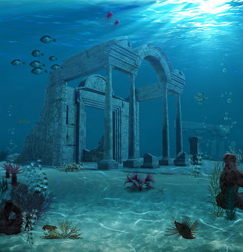

Los lugares abandonados mas llamativos del mundo

Ruinas de la antigua atlantis
¿ Te atreves a visitarlo?
Normalmente los sitios deshabitados nos evocan sentimientos de angustia y misterio. La atracción por estas zonas es un fenómeno de alcance global, quizá por la sensación de estar en mitad de una película de miedo. No cabe duda de que la soledad en la que se encuentran inmersos a veces puede provocar escalofríos pero, ¿son terroríficos o hermosos? ¿Os atreveríais a visitarlos? Estos son algunos de los lugares abandonados más fascinantes del mundo.